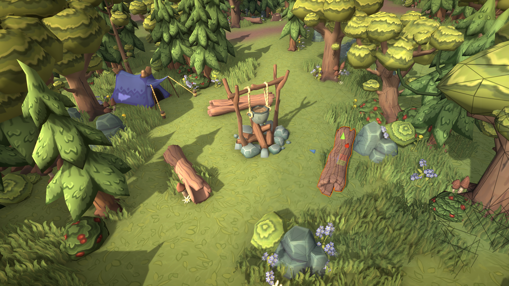

The Indie Quest is a course in programming, art, and production, specifically designed for creating indie games. Instead of studying individual subjects in isolation, you acquire the skills directly by using them on game projects. You will first become an apprentice, completing carefully designed game coding missions that will build your programming knowledge step-by-step. You will then extend these foundations by learning advanced concepts while creating your own games. Applying project management strategies will help you prototype your ideas and polish the end result to share your games with the world. On the art side of things you will choose any visual style that you want for your games. A study plan personalized for your goals will guide you through the art fundamentals and technical aspects required to bring your vision to life. Be it pixel art, 3D, traditional drawing, or digital painting, we have you covered. Learn more about the curriculum » [Intern länk till kursplan]
There are no exams in our school. You will not have to write project reports or memorize theory. All that matters is what you are able to create and your completed games will demonstrate that. We use the flipped classroom model to make sure you get all the help you need to master your skills. Instead of listening to a teacher lecturing everyone at the same speed, you will use online educational materials to learn at your own pace. Some concepts might take longer to conquer, other times you will breeze ahead. The teacher will be there to answer any specific questions and help you individually when you need it. You will share an office space with other students and a teacher so you can learn and create in a supportive environment. Daily stand-up meetings will kick off the workday and weekly group check-ins will make sure everyone is reaching their goals.
Another unique advantage of The Indie Quest, besides the specialized curriculum, is learning and working within a community of many professional indie game developers. Spelkollektivet, where the school takes place, is the largest co-living and co-working space for game developers from all over the world. You will be part of a friendly, supportive community that shares the love for gaming and creating games, including all the social and professional development activities that happen in the house. Learn more about Spelkollektivet » [Extern länk till https://www.spelkollektivet.com]